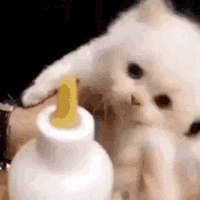
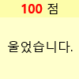
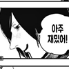

순애물은 아니노
순애물이 되려면 둘다 동정,처녀 모솔이란 설정이 있어야 한다
그리고 일본 배경이 아닌 개조센 배경인것도 감점 요소임
일본 숏컷 처녀 소꿉친구 만화였으면 좋았을듯
샨테 · 11.06 21:40:00
소꿉친구가 존나못생겨서 쭉내림
키나루디안마기 · 11.06 21:48:21
소꿉친구 소재는 익숙한데 신발끈 하나로 설렘을 만들어내는 게 좋네 ㅋㅋ 단편 감성 제대로임
ㅇㅇ · 11.06 21:49:15
남자 갈좆 걸레남이노 역겹다
ㅇㅇ · 11.06 21:58:08
좀 치노..
ㅇㅇ · 11.06 23:56:41
또 못살게 구네
ㅇㅇ18 · 11.06 23:56:50
또 못살게 구네
환란 전 교회 휴거 · 11.07 00:39:03
모든 인간은 죄 본성에 대한 심판으로 지옥에 갈 수 밖에 없지만 선을 추구하는 "양심"이 있는 자, 그 인류 죗값을 위해 주 예수 그리스도께서 보혈을 흘리시고 부활하신 사실을 "믿는"다면 구원받게 된다 더 나아가 현재 휴거 임박 시점에 선을 추구하는 "양심"이 있는 자, 이 복음을 "믿는"다면 곧 닥칠 7년 환란과 죽음을 면하고 살아서 천국에 직행하게 된다


댓글
수집 당시 댓글 54개
박수 · 11.06 12:27:25
삭제됨 · 11.06 12:39:20
· 삭제됨 · 11.06 18:10:08
· 삭제됨 · 11.06 18:11:46
· 삭제됨 · 11.06 19:31:51
ㅇㅇ · 11.06 12:44:44
너누나노 · 11.06 12:54:36
solish · 11.06 12:55:36
· solish · 11.06 12:57:55
· 카갤러3 · 11.06 15:02:33
· solish · 11.06 15:04:05
가면군 · 11.06 13:07:01
Opl · 11.06 13:11:55
ㅇㅇ · 11.06 13:25:36
ㅇㅇ · 11.06 13:32:48
이명박이뽑은칼 · 11.06 13:33:27

카갤러1 · 11.06 13:37:46
카갤러2 · 11.06 13:44:26
ㅇㅇ · 11.06 14:03:35

ㅇㅇ · 11.06 14:16:17
피타라텔레스 · 11.06 14:46:40
돈사골새우라면 · 11.06 15:02:47
상당군 · 11.06 15:21:43
기븐 · 11.06 15:30:39
ㅖㅖㅖ · 11.06 16:23:56

ㅇㅇ · 11.06 18:31:23
애니브리띵 · 11.06 18:31:31
ㅇㅇ · 11.06 18:58:34
땨뗘(봇) · 11.06 21:00:07
프라이데이나이트펑킨아시는구나 · 11.06 21:00:09
· ㅇㅇ · 11.06 21:09:02
· 프라이데이나이트펑킨아시는구나 · 11.06 21:09:12
헤이룽 · 11.06 21:06:58
· 헤이룽 · 11.06 21:07:52
ㅇㅇ · 11.06 21:09:36
· ㅇㅇ · 11.06 21:09:44
내낸내 · 11.06 21:10:57
야가미라이토 · 11.06 21:23:25
샨테 · 11.06 21:40:00
키나루디안마기 · 11.06 21:48:21
ㅇㅇ · 11.06 21:49:15
ㅇㅇ · 11.06 21:58:08
ㅇㅇ · 11.06 23:56:41
ㅇㅇ18 · 11.06 23:56:50
환란 전 교회 휴거 · 11.07 00:39:03
ㅇㅇ · 11.07 02:15:38
ㅇㅇ · 11.07 06:27:15
ㅇㅇ · 11.07 06:27:19
ㅇㅇ · 11.07 08:19:30
ㅇㅇ · 11.07 11:10:01
ㅇㅇ · 11.07 13:57:26
JungNu · 11.07 15:14:21
ㅇㅇ · 11.07 16:56:25
ㅇㅇ · 11.07 18:32:21